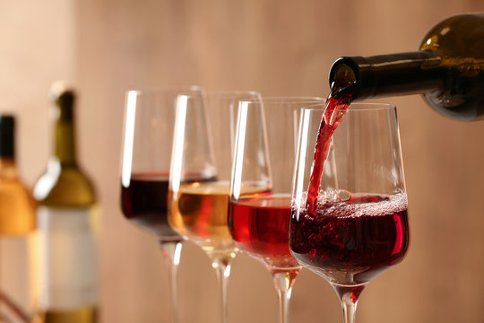

About
BlindTaste
Welcome to BlindTaste, where data science meets the wine world. This platform is an unbiased, AI-driven recommendation engine designed to remove the guesswork when discovering new wines.

Welcome to BlindTaste, where data science meets the wine world. This platform is an unbiased, AI-driven recommendation engine designed to remove the guesswork when discovering new wines.

BlindTaste uses content-based filtering. Every grape variety in the database is represented as a centroid — the mean alcohol content, body, and acidity computed across all wines of that variety. When you submit a query, the engine normalizes your input to a [0, 1] scale and computes the Euclidean distance between your profile and each centroid.
Only the features you actually provide are used — if you leave acidity blank, the
distance is computed over fewer dimensions rather than substituting a default value.
The distance is then converted to a similarity percentage using the formula
similarity = max(0, (1 − d / √n) × 100), where n is the number
of features provided. The five closest grape varieties are returned, ranked by similarity.
The system offers two modes: Label Input takes details read off a wine label and finds similar-but-different grape varieties, explicitly excluding the input grape from the results. Flavor Profile lets you describe the taste you want from scratch, with no specific wine in mind.
The recommendation engine is built on a curated subset of the XWines dataset, which covers over 100,000 wines from around the world. Only single-grape (varietal) wines are included — blended wines were excluded to avoid ambiguous grape attribution, since the first-listed grape in a blend is not always the dominant one.
After filtering, 72,496 varietal wines were retained. Grape–type combinations with fewer than 50 wines were then removed, as these correspond almost exclusively to highly obscure, regionally rare varieties that are practically unobtainable. The final database contains 144 grape–type combinations spanning Red, White, Rosé, Sparkling, Dessert, and Dessert Port categories.